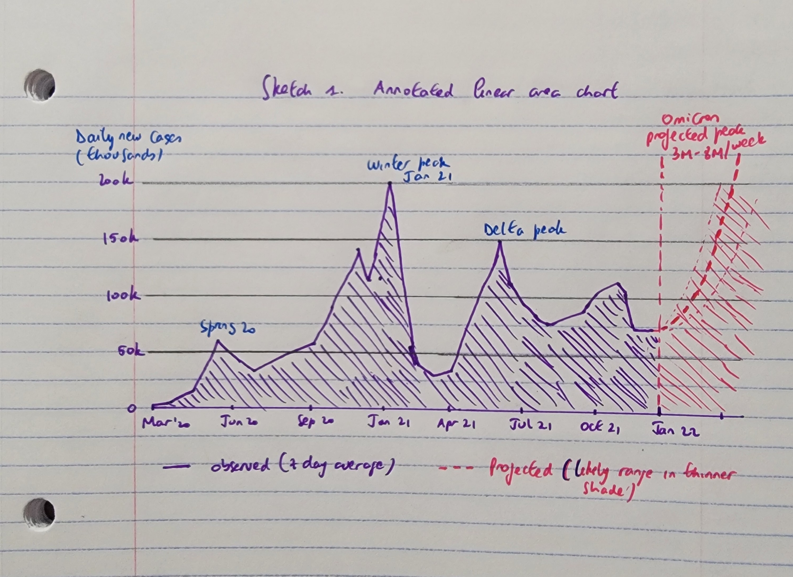
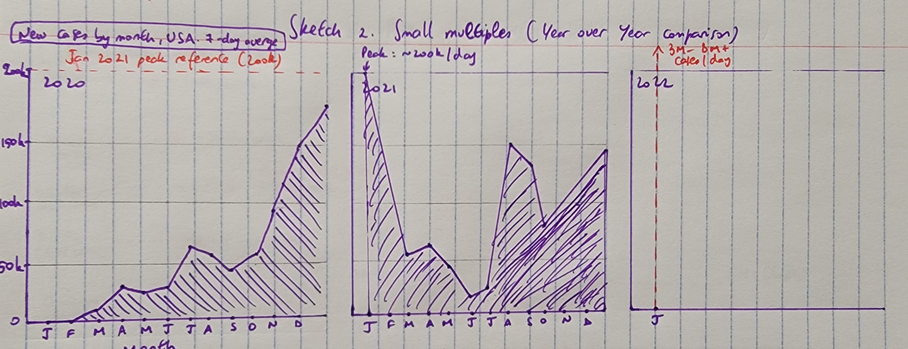
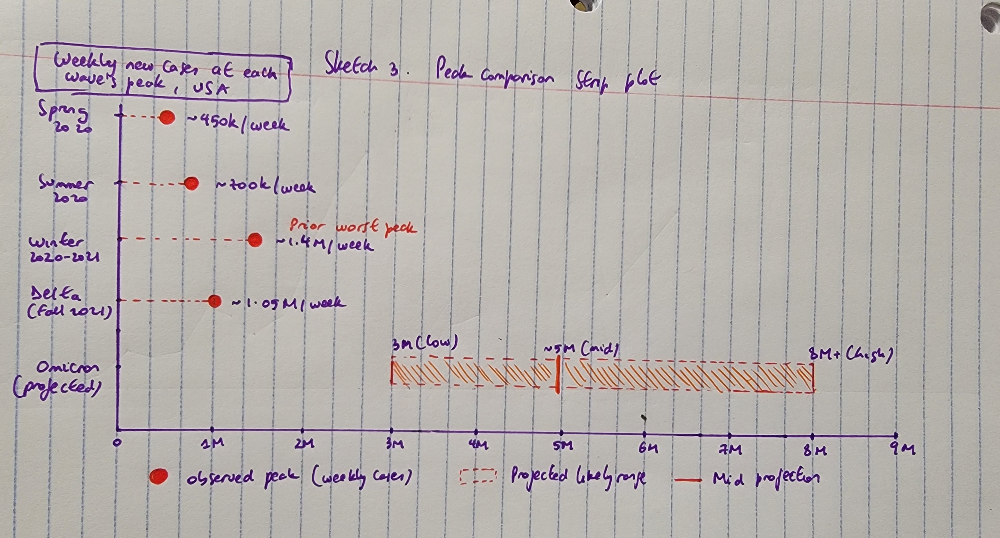
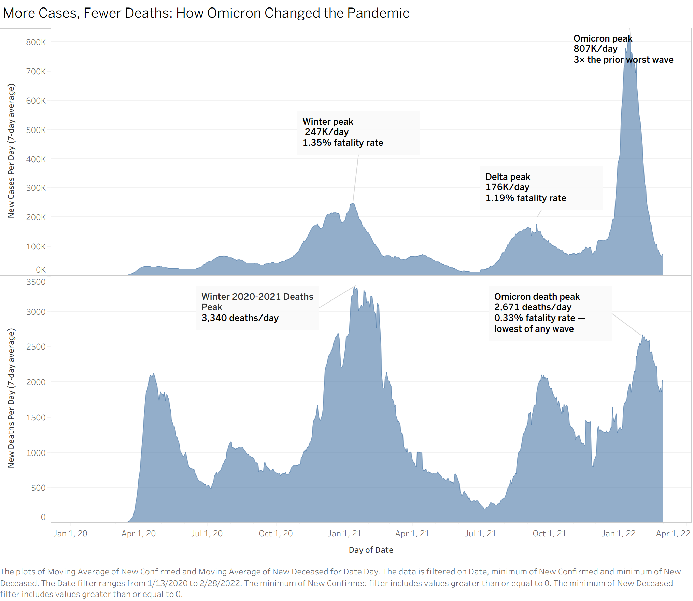

Reading & Critique

Insights about the data/visualization:
- The most striking insight is the massive expansion of cases at the top of the 2022 spiral, indicating a projected surge in January 2022 larger than all previous peaks in the pandemic’s history
- The spiral form suggests seasonality with repeated yearly cycles and comparable positions in the calendar aligned around the spiral. We can observe multiple, progressively larger waves across the pandemic, with a small inner 2020 wave, a larger winter peak in early 2021, and the projected January 2022 surge mentioned above
Design Critique:
The spiral visualization is very expressive in its attempt to convey the cyclical and seasonal nature of the COVID pandemic and the unprecedented magnitude of the Omicron surge. By mapping time on a radial path where the vertical axis consistently represents January, the design emphasizes seasonality and makes it easy to visually compare the same months across different years, and in particular, winter peaks of 2021 and 2022. The design also encodes uncertainty at the end of the spiral through the familiar visual metaphor of a cone of uncertainty commonly used for hurricane forecasts, communicating the inherent uncertainty of epidemiological modeling to a general audience. The design overall prioritizes the emotional and narrative takeaway that the pandemic was spiraling into a new, more intense phase with the Omicron variant.
However, the design suffers significantly in terms of effectiveness and precise reading. In terms of visual encoding, humans are far more accurate at comparing lengths along a common baseline than they are at judging the area or thickness of a curved, expanding shape. As a result, the use of width in a radial layout makes it very difficult to determine specific case counts at any given point in time. Furthermore, the design seems to use the width of the red band for two different things: historical 7-day averages for the majority of the spiral, and statistical uncertainty for the final January 2022 projection. This dual encoding is likely to confuse the target audience, as a reader might incorrectly assume the widening at the end represents a surge in confirmed cases rather than a range of possible outcomes. Similarly, the spiral form might lead the reader to incorrectly interpret the distance from the center as representing quantitative information. For a general audience, a standard linear chart would be far easier to read.
Visualization Sketches

Design Rationale for Sketch 1:
- Motivation: The original's biggest problem is encoding case counts as band width in a polar layout is genuinely difficult to read accurately, so the most direct fix was to switch to a linear time axis, which is a much more perceptually reliable encoding for quantitative data.
- Hoping to communicate: The full two-year pandemic timeline, with wave magnitudes sitting on a common axis so readers can compare them directly without any mental transformation. The uncertainty band for the Omicron projection is retained from the original, and a clear dividing line separates observed data from the forecast.
- What worked well: The chart is immediately readable for a general audience with no learning curve. The scale is fully labeled, the observed/projected boundary is unambiguous, and direct annotations on the peaks mean readers don't have to hunt for the key takeaways.
- What didn't work well / to explore next: Switching to a linear axis means losing the seasonal structure entirely. There's no longer any visual signal that January is consistently the most dangerous month. A reader has to mentally locate and compare the same calendar positions across years rather than seeing them aligned. That gap motivates the next sketch.

Design Rationale for Sketch 2:
- Motivation: The main thing Sketch 1 gave up was the spiral's most genuine strength: the ability to compare the same month across years at a glance. Small multiples can recover that by aligning January on the left of every panel, while still using a linear position encoding that the polar layout couldn't offer.
- Hoping to communicate: That there is a clear seasonal pattern to Covid waves, with January consistently the most dangerous month, and that the Omicron projection for January 2022 far exceeds any prior January, which is visible immediately because the panels are directly aligned and share the same y-axis scale.
- What worked: The seasonal comparison is direct. The shared scale and the reference line at the 2021 peak mean a reader can instantly see how much further the Omicron projection extends beyond the prior worst case.
- What didn't / explore next: Splitting into three panels breaks the sense of a continuous unfolding story of the pandemic over two years disappears. The 2022 panel in particular feels almost empty, which actually undercuts the urgency rather than reinforcing it. That suggests the next sketch should try to make the magnitude comparison the focus of the design, rather than something a reader has to extract from a time series.

Design Rationale for Sketch 3:
- Motivation: Both previous sketches assumed the right form was a time series, but the article isn't really about the full timeline. It's making one specific argument: Omicron will be far worse than anything before it, and we don't yet know exactly how bad. Starting from that takeway rather than from the data's natural shape suggested abandoning the time series entirely.
- Hoping to communicate: A single, direct comparison between Omicron's projected range and every prior wave peak on a shared linear axis, with the width of the projection bar itself communicating uncertainty.
- What worked: The core message is the first thing a reader sees, with no coordinate system to decode first. The projection range and its uncertainty is the dominant visual element rather than an afterthought.
- What didn't work out as anticipated: Stripping down to peaks means losing much temporal information, including how long waves lasted, when within a year they occurred, and how cases evolved between them.
Final Visualization Design

Final Writeup
The central message of this visualization is that Omicron represented an unprecedented surge in cases but a proportionally far smaller death toll than any prior wave, which is the exact argument Dr. Shaman makes in his article. To communicate this, the design uses two vertically aligned area charts sharing a common time axis, one showing the 7-day rolling average of daily new cases and one showing daily deaths. Aligning the charts on a shared x-axis means a reader can move their eye vertically between the two charts at any point in time and immediately see the relationship between case volume and mortality. The area mark was chosen over a line because the filled region gives an intuitive sense of the cumulative weight of each wave. Annotations at each wave's peak explicitly state the fatality rate (1.35% at the Winter 2020–21 peak, 1.19% at Delta, and 0.33% at Omicron) so the reader does not need to calculate the relationship between the two panels themselves.
The critique identified two core problems with the original spiral: the difficulty of comparing band widths in a polar coordinate system, and the near-complete absence of a labeled scale. This design addresses both directly by using position along a linear axis as a far more perceptually accurate encoding, and the y-axes are fully labeled with gridlines so the Omicron case peak of ~807K/day can be read precisely rather than estimated from a single ambiguous reference mark. However, the redesign does sacrifice the one thing the spiral did genuinely well: the ability to see seasonal patterns at a glance by reading the same angular position across rings. In the dual-panel layout, a reader must mentally locate and compare January 2021 with January 2022 along a horizontal axis rather than seeing them stacked at the same clock position. This tradeoff reflects a deliberate choice to prioritize the article's specific argument (the unprecedented scale of Omicron alongside its relatively low fatality rate) over a more general seasonal overview, which felt more appropriate for an opinion piece with a clear message to convey.